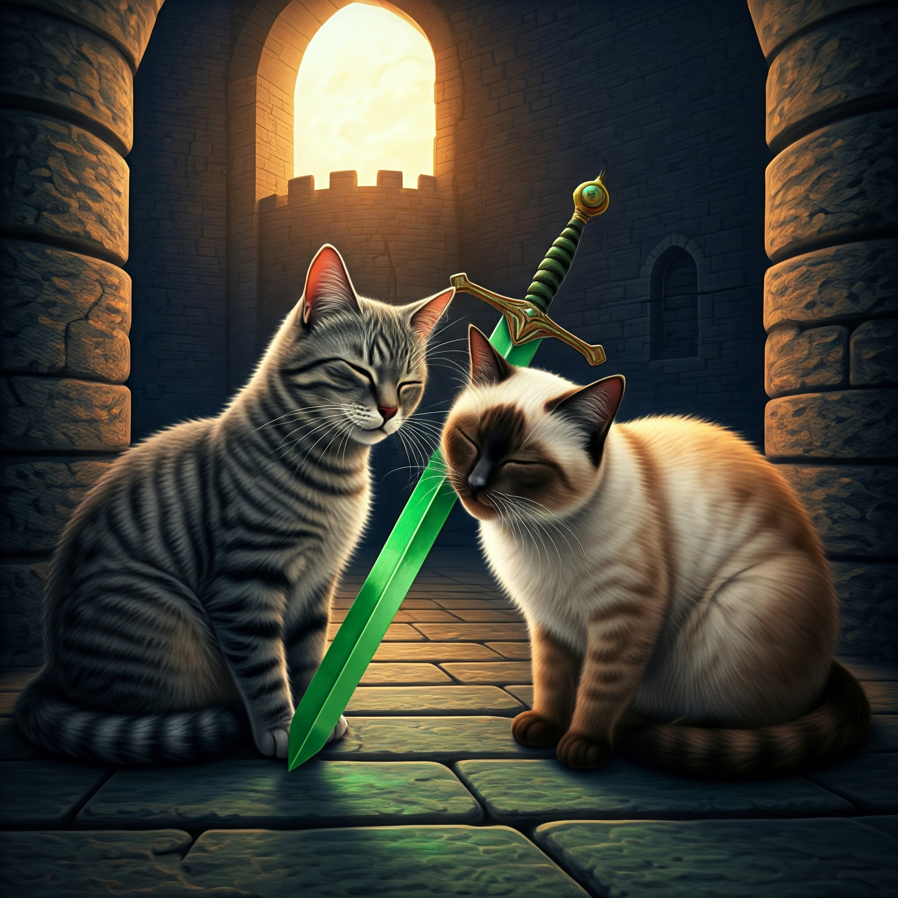

You chose to fight with the Cat Nip Sword.
As soon as you pull out the sword, the shadow of a cat flies through the sky.
"It's my Master Senna the Seal Cat!" Sausage says.
The seal cat lands onto the ground. "What smells so good?" Senna asks.
"Well, must be the cat nip right here," you point at your sword.
Senna runs towards it and starts to rub herself against it.
Your cat Lilas cannot wait either. She joins Senna to rub agaist the sword and smell the tasty cat nip.
"But Master, do you see who it is? It's your enemy Lilas the Tabby Cat," Sausage is confused.
Senna looks at Lilas, and says: "You are mistaken. I said Lilas and I fought a little.
All cats do it as a gesture of friendly play, not the kind of violent fighting you think of."
You ask Senna if she wants to join you and Lilas. Senna agrees.

Having another cat is the best treasure that you decide to conclude this adventure.
With Senna's guidance, you three return home safely and enjoy some tasty cat food.
The End
Congratulations! You survived!
Return Home